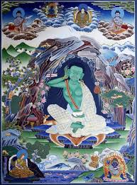

Миларепа является одним из великих йогов и адептов Тибета, достигшего просветления за одну жизнь. Его история запечатлена в сказаниях сохранившихся до наших дней. Известно, что он жил с 1052 по 1135 год. и остался в памяти многих тибетцев великим учителем тибетского Буддизма, знаменитым йогом-практиком, поэтом, автором многих песен и баллад, которые до сих пор очень популярные на Тибете, он также является одним из основателей школы тибетского Буддизма Кагью. Его учителем был Марпа -переводчик.
Жизнеописание Миларепы имеется во многих источниках. Известно, что он родился в богатой тибетской семье, но случилось несчастье - отец его внезапно умер, и дом, поле и всё имущество забрал его дядя, который довольно жестоко относился к нему, к его матери и сестре. Трудно было терпеть издевательства, и он пошёл учиться магии, чтобы отомстить своему дяде. Случилось что, когда дядя устроил праздник, он вызвал с помощью колдовских сил обвал крыши, и погибло 35 человек, но, несмотря на это дядя и тётя выжили. После этого жители деревни ещё более ожесточились против его семьи, и тогда он вызвал ещё и грозу, чтобы уничтожить посевы на полях.
Спустя некоторое время Миларепа понял, что такой способ мести не принес никому ничего хорошего, он стал искать учителя, и его направили к Марпе переводчику. Марпа перед приходом Миларепы увидел сон, что к нему принесли большой твёрдый алмаз для огранки. Vf вёл себя чрезмерно строго и сурово, заставлял ученика делать тяжёлую работу и отказывался давать ему буддийские посвящения, все время откладывая их. Ученик строил дома, к которым Учитель всё время придирался и заставлял их разрушать и строить заново и в других местах.
Из-за того, что Марпа всё время отказывался учить, он стал обращаться к его жене и ученикам, пытаясь повлиять на Марпу и получить учение. После нескольких жёстких отказов, и несмотря ни на какие просьбы, Марпа всё-таки взял его в ученики, и дал наставления по медитации. В течение двенадцати лет медитации Миларепа достиг состояния ваджрахары (полного просветления). О Миларепе говорят, что он — первый, кто достиг такого высокого уровня просветления за одну жизнь, не имея заслуг в предыдущих рождениях.